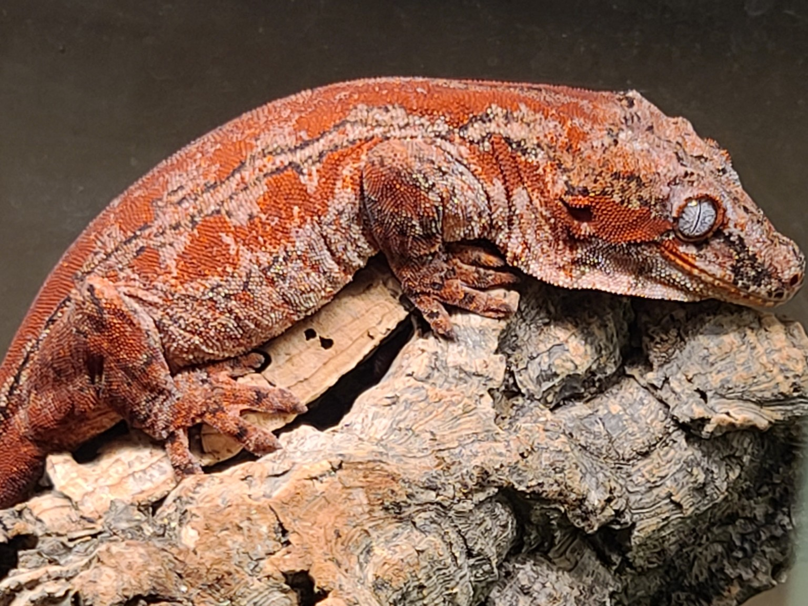

About Me

Ever since I was a child I have always had a fondness for animals. It is something that was definitely passed onto me by my father. I grew up with dogs, cats, fish, reptiles, and even birds. My father would often take us to aquariums or zoos to look at all the amazing types of animals that were on display in the exhibits.
I fondly remember looking at the aquariums that we had and even the box turtles or iguanas that we grew up around. Of the pets we had I think fish were my favorite, while I was growing up. I always loved feeding them frozen brine shrimp and frozen bloodworms.
My love for reptiles really began one day when I visited my uncle. I was about 10 or 11 years old. He had a huge tank, probably 120 gallons. In that tank he had heat lamps and I just remember seeing these 3 huge brown lizards. I was so amazed at what they were. He fed them some superworms and let me pet their scaly skin. I did not what they were until I was a little older. They were bearded dragons.
Bearded dragons were my favorite pet reptile for years, but I had never had the chance to own one, until I turned 17. I had began doing research and saving my lunch money to purchase a bearded dragon. I eventually did and was able to buy my first "beardie" her name was Tiny. She was a beautiful sandfire orange with dark purple bars.
As time went on, she passed away and I ended up starting work and school and gave my other pets away, leopard geckos, other bearded dragons, and crested geckos. I wanted to make sure they were taken care of.
As I became an adult I had an itch to get a pet reptile again and I settled on another bearded dragon. He was awesome and as a newly wed, my wife grew to love him as well. We ended up getting pregnant and we had to get rid of him due to my wife's health issues.
As some years went by I wanted to get Gargoyle geckos and ended up buying two young geckos. One, I currently have, and the other I no longer have. She is now six years old and her name is Jupiter. Jupiter is the reptile that has spurred this new "go around" of animals. I currently have 4 Gargoyle geckos, 9 Crested gecko, 2 Chahouas, 2 pacman frogs, various species of beetles, and quite a few Mourning geckos.